簡易型溫室結構施工方法
適用範圍
此項適用於簡易型温室，主要構材使用錏管維合，附加拉固於地面之鋼
索地錨，外披塑膠布，加入進出門具、捲捲裝置等之温室。
建造流程
完整的簡易型溫室建造流程參考圖5-2 。
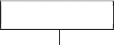
...
計畫擬定
製造圖
擬定材料單

環境整理退場
f
設備試車
其他設備、管線安裝
L f
+
材料進廠品管
L
材料裁切加工
L
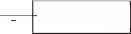
退回
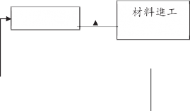
f
連接件 」
成品
例如：三通
夾片丶 管 套
夾等
f
完成品
立柱固定
架設山牆面、脊樑、桁條丶斜撐、屋面弧管與支柱直管等
屋項被霞維裝
捲持裝置維裝
t
l
不可使用
檢臉
加工後品質
圖5-2
簡易型温室建造流程
1.
2.
(1)
(2)
(3)
(4)
(5)
(6)
(7)
3.
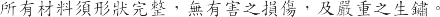
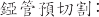
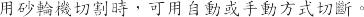
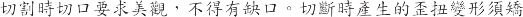
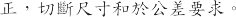
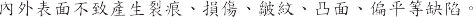
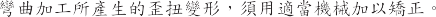
(1)
(2) CNS
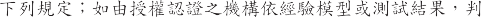
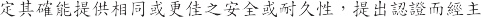
(3) SAEJ78, ASTMB633 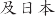 JISB1125 JISB1071
4. 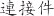
(
5-3) 5-4
I
第五章 施工
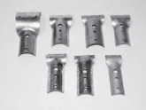 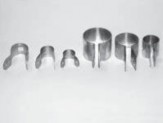 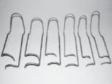
三 通 夾 片 管 套 夾 彈 簧 夾
圖 5-3
當用溫室結構接合元件
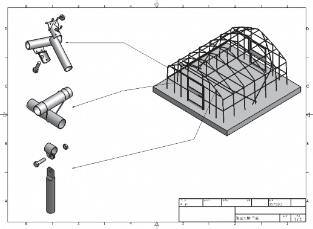
圖 5-4
零件與接合方式簡圖
地面泥作
土木量測：訂出溫室搭建範圍並打樁拉繩固定。
依管材規格定位鑽孔，管材沒入土壤深度依據設計深度施作，一
般須達 50cm 以上。
1.
(1) 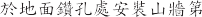 1 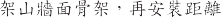 5 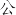
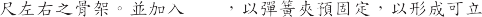
桁條
(2) 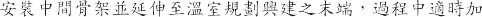
桁
(3)
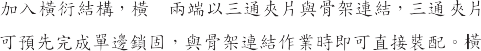
桁
(4)
桁
(5)
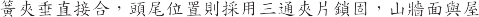
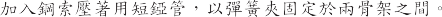
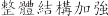 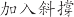 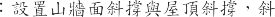
2.
(1)
(2) 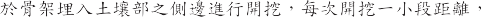
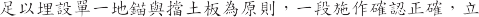
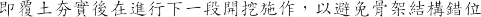
(3) 70 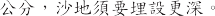
(4) 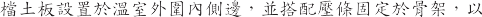
(5)
I
第五章 施工
緊 器， 鬆緊器 需保留 可日 後調整緊度之 裕度。
簡易型溫室結構施作注意事項
斜撐：
温室四週的斜撐為加強抗風性的最主要關鍵，在溫室四邊角處以
直管設置斜撐，斜撐一邊緊固於山牆面屋頂處，一邊固定於支柱，
末端須插入至地面下
30cm
以上 ，斜撐受力能順暢傳達地面承受。
斜撐投影於地面長度約
5～6m，與骨架錏管須以固定夾具緊密接
合。對長度較長的溫室，以 30
加強。
公尺內的區間，設置 10
公尺的斜撐
圖5-5
斜撐示意圖
圖5-6
長度較長的溫室斜撐配置
勻溫室安全構造手冊
2.
支柱錏管材料之長度有一定規格，需要延長支柱使成整體者，避
入長度須大於 3 倍管(外徭)
以上，立柱接管情況下，為避免環境水分
滲入錏管內壁，縮管端應位於下方(圖5-7) 。
圖5-7
錏管以縮管方式連接應注意事項
3. 彈簧夾交錯配置
彈簧夾因僅作夾持固定，接合強度較弱，不同安裝方向強度不同，可在主柱與桁條間的紐裝結處，採正負交錯的配置，可增加耐風能力。
I
結構型溫室泥工方法
適用範圍
此項適用於使用銅骨立柱安裝於基礎錨定面之搭建工法，之結構型
｀、回户
邙1 至°
環境整理退場
建造流程
L
製造圖
計畫擬定
+
擬定材料單
f
設備試車
風扇、捲取機設備安裝醚線
f
口竺
口 口 B
材料進廠
L
退回
屋項被覆維裝
切 合裁 維
料 工
材 加
L
f
半成品
送電鍍
f
►
f
架設外柱、屋面彎管丶橫樑丶脊樑、斜撐、桁架、側樑與斜撐等
f
►
基礎放樣拖作
材料進工
地查驗
主( 副) 立柱固定
捲楊裝置維裝
i
＿ 完 成 品
完成品回廠
+
改 善 ◄
材料
圖 5-8
結構型溫室建造流程
所有材料須形狀完整，無有害之損傷及生鏽。另温室水槽為重要元件，水槽強度須足夠，以與溫室項部拱架作固定接合。水槽亦
為排導雨水元件，為利於有效排水，水槽至少每 30m
洩水管及醚置排水管路。
結構連接方式須由廠商璀認可承受所設計之負載。